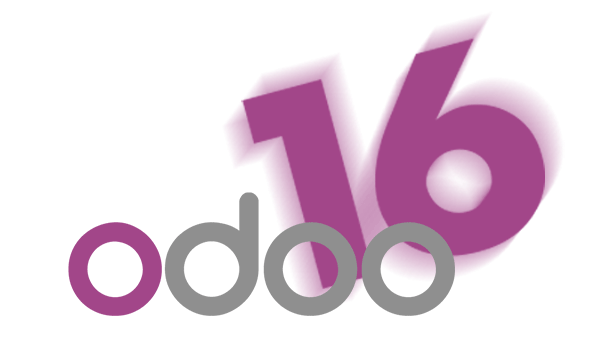

conclusiones
El proyecto de instalación y configuración del ERP Odoo ha permitido conocer de primera mano cómo funciona una solución empresarial integrada. Algunos aprendizajes destacados son:
Gracias a las herramientas gráficas de Odoo, se nos ha facilitado la comprensión del módulo de ventas y la gestión de relaciones con los clientes (CRM), mostrando cómo un ERP puede optimizar la gestión empresarial.
